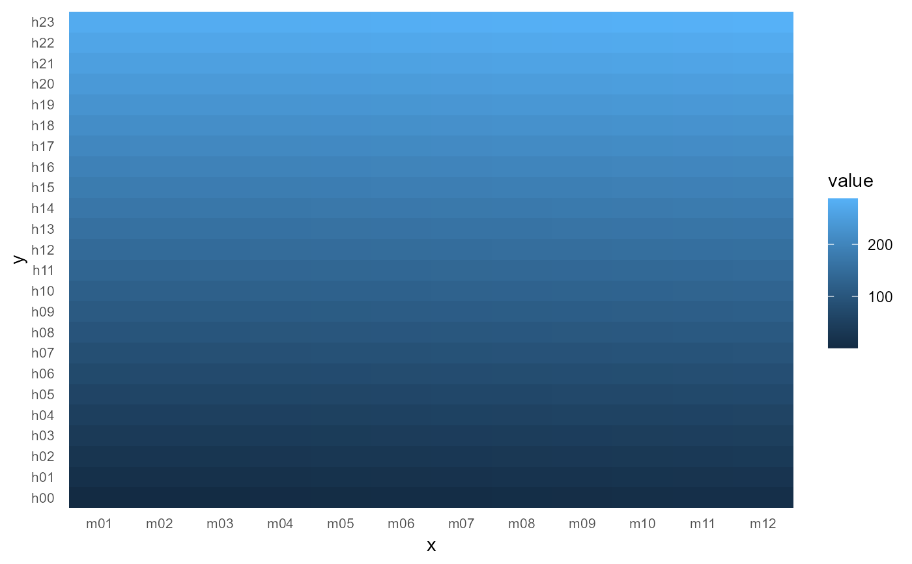

Composable single layers that put time-series data on a calendar inside
a normal ggplot() pipeline (the assembled-figure counterparts are
calendar_autoplot() and calendar_plot()):
Usage
geom_calendar(
calendar,
z,
datetime = "datetime",
by = NULL,
x_tf = NULL,
y_tf = NULL,
fun = mean,
data = NULL,
...
)
geom_calendar_tile(
calendar,
z,
timeslice = "timeslice",
by = NULL,
x_tf = NULL,
y_tf = NULL,
fun = mean,
data = NULL,
...
)
theme_calendar(...)Arguments
- calendar
A
Calendar.- z
Name of the numeric column to aggregate and fill by.
- datetime
Name of the POSIXct/Date column (
geom_calendar()). Default"datetime".- by
Character vector of columns to preserve through aggregation (facet/group carriers). Default none.
- x_tf, y_tf
Timeframes for the x and y axes. Default: finest on y, next-finest on x.
- fun
Aggregator over instants/timeslices falling in one tile. Default
mean.- data
A
data.frame;NULL(default) uses the plot data.- ...
Passed to the tile geom (e.g.
colour,linewidth), or fortheme_calendar()toggplot2::theme().- timeslice
Name of the timeslice-ID column (
geom_calendar_tile()). Default"timeslice".
Details
geom_calendar()— datetime mode: name a POSIXct/Date column (datetime=) and a measured column (z=); instants are cut to timeslices viadatetime_to_timeslice()and aggregated withfun.geom_calendar_tile()— timeslice mode: name a timeslice-ID column (timeslice=) and the measured column (z=).theme_calendar()— the compact heatmap theme the assembled plots use.
The calendar inputs are column names, not aes() mappings: ggplot2
trains positional scales before statistics run, so a ggproto Stat cannot
emit the discrete axes a calendar heatmap needs. Each function instead
returns one standard tile layer whose data is derived from the plot (or
layer) data — discrete scales, facets, and themes then work through the
normal ggplot2 path. The tile fill is the aggregated value; axes are
vocabulary-ordered factors, so scale_x_discrete() etc. apply as usual.
Faceting: list the columns your facets need in by= — aggregation
then happens within each combination and the columns survive into the
layer data (see the example).
Examples
if (requireNamespace("ggplot2", quietly = TRUE)) {
library(ggplot2)
cal <- calendar("m12_h24")
# datetime mode with a facet carrier
x <- data.frame(
t = as.POSIXct("2021-01-01", tz = "UTC") + 3600 * (0:999),
v = rnorm(1000),
site = rep(c("A", "B"), 500)
)
ggplot(x) +
geom_calendar(calendar = cal, datetime = "t", z = "v", by = "site") +
facet_wrap(~site) +
theme_calendar()
# timeslice mode
y <- data.frame(timeslice = S7::prop(cal, "leaftable")$timeslice, v = 1:288)
ggplot(y) +
geom_calendar_tile(calendar = cal, z = "v") +
theme_calendar()
}
